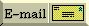

Use the standard class template map<Key,Val>:
#include <string>
#include <map>
#include <iostream>
using namespace std;
int main()
{
map<string,int,less<string> > age; // age is a map from string to int
age["Fred"] = 42; // Fred is 42 years old
age["Barney"] = 37; // Barney is 37
if (todayIsFredsBirthday()) // On Fred's birthday,
++ age["Fred"]; // increment Fred's age
cout << "Fred is " << age["Fred"] << " years old\n";
}
[ Top | Bottom | Previous section | Next section ]
You can't, but you can fake it pretty well. In C/C++ all arrays are homogeneous (i.e., the elements are all the same type). However, with an extra layer of indirection you can give the appearance of a heterogeneous container (a heterogeneous container is a container where the contained objects are of different types).
There are two cases with heterogeneous containers.
The first case occurs when all objects you want to store in a container are publicly derived from a common base class. You can then declare/define your container to hold pointers to the base class. You indirectly store a derived class object in a container by storing the object's address as an element in the container. You can then access objects in the container indirectly through the pointers (enjoying polymorphic behavior). If you need to know the exact type of the object in the container you can use dynamic_cast<> or typeid(). You'll probably need the Virtual Constructor Idiom to copy a container of disparate object types. The downside of this approach is that it makes memory management a little more problematic (who "owns" the pointed-to objects? if you delete these pointed-to objects when you destroy the container, how can you guarantee that no one else has a copy of one of these pointers? if you don't delete these pointed-to objects when you destroy the container, how can you be sure that someone else will eventually do the deleteing?). It also makes copying the container more complex (may actually break the container's copying functions since you don't want to copy the pointers, at least not when the container "owns" the pointed-to objects).
The second case occurs when the object types are disjoint — they do not share a common base class. The approach here is to use a handle class. The container is a container of handle objects (by value or by pointer, your choice; by value is easier). Each handle object knows how to "hold on to" (i.e. ,maintain a pointer to) one of the objects you want to put in the container. You can use either a single handle class with several different types of pointers as instance data, or a hierarchy of handle classes that shadow the various types you wish to contain (requires the container be of handle base class pointers). The downside of this approach is that it opens up the handle class(es) to maintenance every time you change the set of types that can be contained. The benefit is that you can use the handle class(es) to encapsulate most of the ugliness of memory management and object lifetime. Thus using handle objects may be beneficial even in the first case.
[ Top | Bottom | Previous section | Next section ]
The most important thing to remember is this: don't roll your own from scratch unless there is a compelling reason to do so. Instead use one of the standard class templates such as vector<T> or list<T> or whatever.
Assuming you have a compelling reason to build your own container, here's how to handle inserting (or accessing, changing, etc.) the elements.
To make the discussion concrete, I'll discuss how to "insert an element into a linked list." This example is just complex enough that it generalizes pretty well to things like vectors, hash tables, binary trees, etc.
A linked list makes it easy insert an element before the first or after the last element of the list, but limiting ourselves to these would produce a library that is too weak (a weak library is almost worse than no library). This answer will be a lot to swallow for novice C++'ers, so I'll give a couple of options. The first option is easiest; the second and third are better.
[ Top | Bottom | Previous section | Next section ]
A template is a cookie-cutter that specifies how to cut cookies that all look pretty much the same (although the cookies can be made of various kinds of dough, they'll all have the same basic shape). In the same way, a class template is a cookie cutter for a description of how to build a family of classes that all look basically the same, and a function template describes how to build a family of similar looking functions.
Class templates are often used to build type safe containers (although this only scratches the surface for how they can be used).
[ Top | Bottom | Previous section | Next section ]
Consider this function that swaps its two integer arguments:
void swap(int& x, int& y)
{
int tmp = x;
x = y;
y = tmp;
}
If we also had to swap floats, longs, Strings, Sets, and FileSystems, we'd get pretty tired of coding lines that look almost identical except for the type. Mindless repetition is an ideal job for a computer, hence a function template:
template<class T>
void swap(T& x, T& y)
{
T tmp = x;
x = y;
y = tmp;
}
Every time we used swap() with a given pair of types, the compiler will go to the above definition and will create yet another "template function" as an instantiation of the above. E.g.,
int main()
{
int i,j; /*...*/ swap(i,j); // Instantiates a swap for int
float a,b; /*...*/ swap(a,b); // Instantiates a swap for float
char c,d; /*...*/ swap(c,d); // Instantiates a swap for char
String s,t; /*...*/ swap(s,t); // Instantiates a swap for String
}
Note: A "template function" is the instantiation of a "function template".
[ Top | Bottom | Previous section | Next section ]
Consider a container class Array that acts like an array of integers:
// This would go into a header file such as "Array.h"
class Array {
public:
Array(int len=10) : len_(len), data_(new int[len]) { }
~Array() { delete [] data_; }
int len() const { return len_; }
const int& operator[](int i) const { return data_[check(i)]; }
int& operator[](int i) { return data_[check(i)]; }
Array(const Array&);
Array& operator= (const Array&);
private:
int len_;
int* data_;
int check(int i) const
{ if (i < 0 || i >= len_) throw BoundsViol("Array", i, len_);
return i; }
};
Just as with swap() above, repeating the above over and over for Array of float, of char, of String, of Array-of-String, etc, will become tedious.
// This would go into a header file such as "Array.h"
template<class T>
class Array {
public:
Array(int len=10) : len_(len), data_(new T[len]) { }
~Array() { delete [] data_; }
int len() const { return len_; }
const T& operator[](int i) const { return data_[check(i)]; }
T& operator[](int i) { return data_[check(i)]; }
Array(const Array<T>&);
Array<T>& operator= (const Array<T>&);
private:
int len_;
T* data_;
int check(int i) const
{ if (i < 0 || i >= len_) throw BoundsViol("Array", i, len_);
return i; }
};
Unlike template functions, template classes (instantiations of class templates) need to be explicit about the parameters over which they are instantiating:
int main()
{
Array<int> ai;
Array<float> af;
Array<char*> ac;
Array<String> as;
Array< Array<int> > aai;
}
Note the space between the two >'s in the last example. Without this space, the compiler would see a >> (right-shift) token instead of two >'s.
[ Top | Bottom | Previous section | Next section ]
Another way to say, "class templates."
A parameterized type is a type that is parameterized over another type or some value. List<int> is a type (List) parameterized over another type (int).
[ Top | Bottom | Previous section | Next section ]
Yet another way to say, "class templates."
Not to be confused with "generality" (which just means avoiding solutions which are overly specific), "genericity" means class templates.
[ Top | Bottom | Previous section | Next section ]
 E-mail the author
[ C++ FAQ Lite
| Table of contents
| Subject index
| About the author
| ©
| Download your own copy ]
Revised Feb 29, 2000